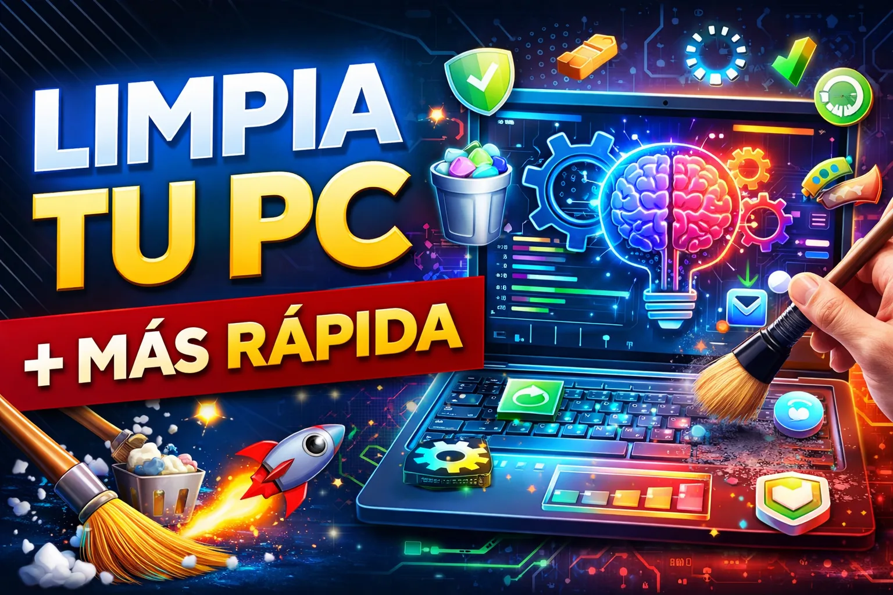

Tutorial Erick Islas Tech
Limpieza Lógica de una PC
¿Tu PC está lenta, tarda en arrancar o se congela sin razón?

¿Qué aprenderás?
- Archivos temporales
- Unidades de almacenamiento
- Desinstalar programas
- Malware y Virus
Guía de apoyo
El problema muchas veces no es el hardware, sino la acumulación de archivos basura, programas innecesarios y procesos en segundo plano.